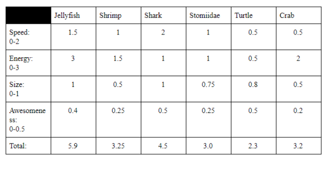

Decision Matrix:
When there is a tough decision to make, you're probably used to compile a list of pros and cons, phoning a friend, or flipping a coin. These approaches may work when determining what color to paint the new apartment or where to go for dinner, but they probably aren't best when it comes to important business decisions. When you're faced with multiple choices and countless variables, a decision matrix can clear up confusion about the options and highlight points that may factor into the final call. This quantitative method can remove emotion as well as confusion to help you guide your business effectively. Unlike a simple list of pros and cons, a decision matrix allows you to place importance on each factor. We used this method in order to discover what the best mechanism is without any bias. To create a decision matrix we created a table. Decision matrices can help you select the best option, but also in prioritizing tasks, problem-solving or even crafting arguments to defend a decision you've already made. List your decision alternatives as rows, and the relevant factors affecting the decisions – such as cost, ease and effectiveness – as the columns. Then, establish a rating scale to assess the value of each alternative/factor combination. Be sure that the rankings are consistent. For example, if you're looking at pain points, be sure each issue is worded so it gets more points the worse it is. Next, multiply your original ratings by the weighted rankings to get a score. All the factors under each option should then be added up. The option that scores the highest is the winning choice or the first item to work on.